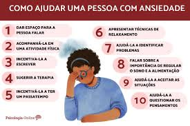
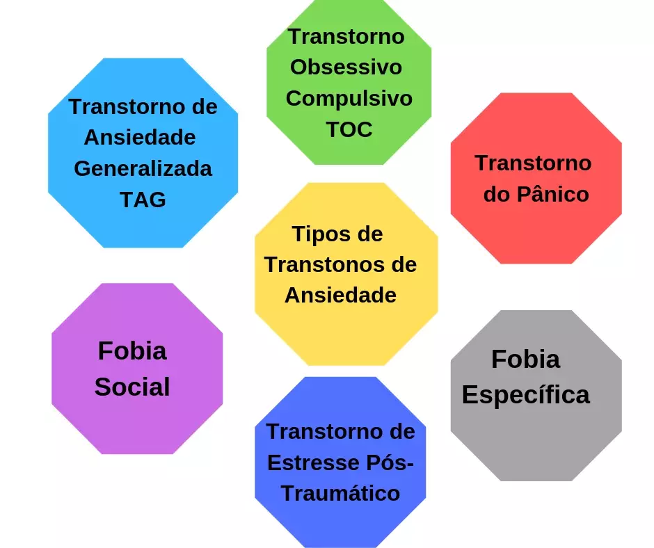
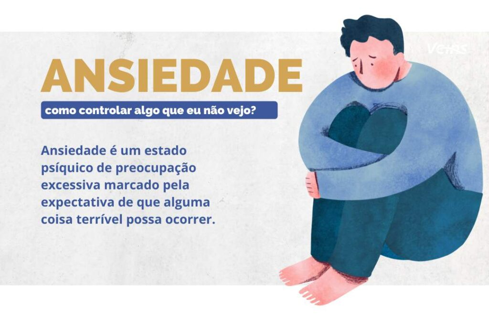

Quais são os fatores de riscos que uma pessoa desenvolva ansiedade ?
A ligação entre ansiedade e depressão
Como saber se a pessoa tem depressão ou ansiedade?
Exercícios e hábitos que você pode adotar
para controla-la
Inicio
Sobre nos
BIog
Ajuda
Telefone
O que desencandeia a Ansiedade ?
Existem diversas causas que, sozinhas ou combinadas, podem vir a desencadear o transtorno de ansiedade, tais como: traumas, estreasse, genética, doenças físicas e até mesmo a depressão. É comum o paciente alternar entre quadros de ansiedade e quadros de depressão, pois uma condição pode gerar a outra.

Quais os tipos de ansiedade ?
Quando a ansiedade acontece com frequência e em um bom alto nível de intensidade, capaz de prejudicar as nossas atividades diárias, é importante ligar o alerta. Pode ser que não se trate mais de um estado “normal” de ansiedade, mas sim, o que conhecemos por TAG (Transtorno de Ansiedade Generalizada).

A seguir, alguns tipos de ansiedade:
Transtorno de Ansiedade Generalizada (TAG)
Esse é o tipo mais comum e frequente de ansiedade, Se caracteriza exclusivamente pela preocupação excessiva em relação a coisas relacionadas à vida ou rotina da pessoa: relações interpessoais, estudo, trabalho, condições de saúde, entre outros.
Essa preocupação excessiva acaba por causar sofrimento e por prejudicar as atividades diárias e qualidade de vida da pessoa. Cansaço, irritabilidade, tensão muscular, insônia, palpitação e problemas gastrointestinais são os principais sintomas da TAG.
Agorafobia
A agorafobia se caracteriza pelo medo e ansiedade em locais ou situações em que a pessoa não considera seguros. Nesses casos, acontece uma espécie de insegurança que é desproporcional ao perigo que realmente pode acontecer.
Exemplos de locais e situações comuns são: filas de supermercado, transporte público ou locais abertos ou na multidão.
Fobia social
Esse tipo de ansiedade se caracteriza pelo medo e ansiedade exagerados em situações de convívio social, nas quais a pessoa possa se sentir sob avaliação ou julgamento.
A fobia social vai muito além de um medo ou nervosismo em falar em público. Pessoas com esse tipo de ansiedade, se sentem constrangidas e desconfortáveis em situações comuns do dia a dia, como comer, beber ou pedir uma orientação ou informação.
Síndrome do Pânico
A síndrome do pânico é um dos tipos de ansiedade mais comum. É caracterizado por ataques de pânico e medo espontâneos, repentinos e inesperados. Esses episódios estão relacionados a crises de ansiedade intensas associados a sintomas físicos, como: aceleração do batimento cardíaco, falta de ar, sudorese e tremores.
Entre os sintomas comportamentais, pode haver a sensação de medo de morrer ou perda de controle. Um ataque de pânico normalmente dura de 15 a 30 minutos, segundo o Ministério da Saúde.
Estresse pós-traumático
Ao passar por um evento traumático, como um assalto, acidente de trânsito ou a perda de alguém especial, podem ocorrer sintomas de um estresse pós-traumático, o qual é caracterizado como um tipo de transtorno de ansiedade.
Esse transtorno faz com que a pessoa tenha crises de ansiedade ao relembrar a situação que causou o trauma, apresentando sintomas, como: falta de ar, taquicardia, sudorese e sensação de medo constante.
Transtorno obsessivo-compulsivo (TOC)
O TOC é caracterizado pela junção de pensamentos obsessivos com compulsões. Essas obsessões podem se manifestar através de ideias, imagens ou pensamentos que acontecem de maneira repetitiva, gerando ansiedade.
Esses ciclos de compulsão e obsessão, além de causar ansiedade, podem trazer prejuízos à rotina de quem o enfrenta.
Fatores de Riscos de uma pessoa que desenvolve Ansiedade
Fatores genéticos (incluindo histórico familiar de transtorno de ansiedade), ambiente (por exemplo, vivenciar um evento traumático ou stresse), constituição psicológica ou uma doença física.

A ligação entre ansiedade e depressão
O estresse em alguns casos pode ser o princípio do problema. O indivíduo que está constantemente estressado e que não se cuida, pode vir a desenvolver uma ansiedade patológica, que pode progredir para uma depressão ou vice-versa. Nos quadros de ansiedade associadas à depressão, a condição se torna mais grave.
Como saber se a pessoa tem depressão ou ansiedade?
Tanto a depressão quanto a ansiedade mudam o comportamento das pessoas.
Por exemplo, quem antes parecia ser tranquilo, agora é inquieto e preocupado, quem antes era bem-humorado, agora parece estar sempre cabisbaixo.
Assim, se você acredita que alguém próximo está com depressão ou ansiedade, provavelmente já percebeu pequenas mudanças no seu jeito de ser, pensar e falar.
Pessimismo, reclamações constantes, medo irracional e posturas indecisas ou desanimadas costumam ser indicativos que a saúde mental de alguém não vai bem.
O diagnóstico da depressão ou ansiedade é feito pelo psicólogo ou médico psiquiatra.
Quando há desconfiança de que alguém pode ter uma dessas condições, é recomendado aconselhar essa pessoa a visitar algum desses especialistas.
Somente um profissional pode diferenciar sintomas que são, de fato, de condições de saúde mental de um mal-estar passageiro.